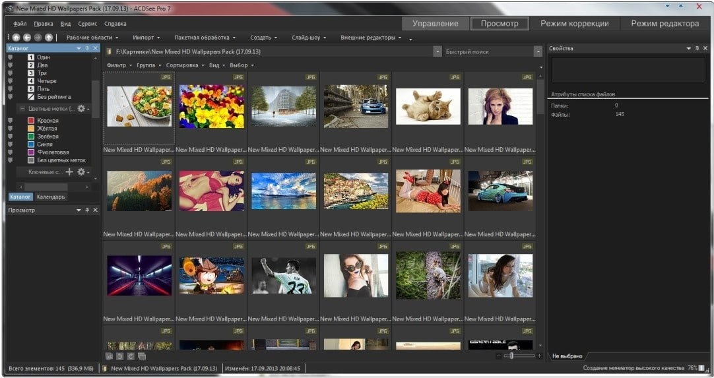

ACDsee – “смотрелка” изображений, фотоменеджер умеющий показывать почти все форматы изображения, включая числе RAW от цифровых камер, векторную графику, PSD и PSB.

Достоинства ACDSee
Вы не только сможете просматривать изображения, но и конвертировать файлы, в том числе и из формата RAW (раньше для этого использовался полупрофессиональный софт). Конечно, конвертирование из RAW и векторных форматов менее продвинутое, чем в специализированных программах, однако эта функция пригодится, когда надо увидеть результаты, не выходя из менеджера изображений.
Интерфейс имеет много настроек. Но разбираться в них не требуется, если вы хотите просто смотреть изображения.
Самое главное достоинство — наличие многофункционального браузера. При помощи него вы сможете просматривать графические файлы как с жесткого диска или флешки, так и с, например FTP или локального хранилища.
Есть возможность просмотреть видео или прослушать аудио.
Недостатки ACDSee
Увы, но без недостатков тоже не обошлось. Справедливости ради отметим, что их у этой программы гораздо меньше, чем у аналогов. В последней версии программы, можно выбрать только два цвета интерфейса – серый и угольный, изменить цвет фона нельзя. Возникают проблемы при работе с флешками, когда безопасное удаление карты не работает, если создаются эскизы. Нужно подождать как минимум 1 минуты (в зависимости от типа флешки и количества фото).
Возникают проблемы при открытии очень больших файлов.
При установке разных версий программы, они могут конфликтовать.
Внимание! Если у вас была установлена или уже установлена версия не на русском и требующая активации то удалите их и все их следы/ключи реестра, перед установкой скачанной версии у нас на сайте.
воще я уже неделю немогу скачать этот долбаный вацап
Прога встала, как влитая, все работает идеально, единственно — не могу с русификацией понять что не так делаю? Как по русски заставить работать?
помогите))) прочит ключ, что делать7
У меня не чего не просит.. Урааа
Просит ключ.
Выложили 12.02.2106 новую версию она не требует активации!
навиди 0000
Дякую, але як активувати, просить ключі….
все скачала, а интерфейс на английском. Как изменить на русский?
ну и где здесь русский? далее цитата Лаврова…
и как её активировать?
Rlass supper
Скачалось быстро, просит ключ…
как получить license key после установки?
Почему долго не приходит сообщение на e-mail с подтверждением эл. адреса (код проверки) которое надо внести при регистрации после установки проги?
Использую ACDSee для просмотра снимков прямо с фотоаппарата. Толковая прога, гораздо удобней, чем стандартный софт для перемещения файлов. Плюс в этой версии можно смотреть отснятое видео сразу в том же окне, а не копировать все десять раз без толку.
Пользуюсь программой еще с далекого 2001 года. Новые версии становятся все ярче и функциональней. Мне очень нравится функционал ACDSee, быстрый просмотр RAW формата изображений и возможность управления профилем ICC.
Как пользоваться данной программой можно посмотреть видео уроки на видео хостингах, но лично я учился работать в ней сам так как она не так уж и сложна как кажется на первый взгляд.
Почему никто не отмечает работу по FTP? по тотал коммандеру соскучились?
Это крайне важная функция при работе со своими сайтами. Не придется скачивать каталоги для просмотра.
Спасибо и даже ключ для acdsee не понадобился а то много сайтов перерыла а толку ноль, хоть тут все путем…
Хорошо вам, Катя, а у меня после установки ключ запрашивает! так и не смогла воспользоваться єтой чудо-программкой, которую все так нахваливают здесь…
Мы сменили файлы на оригинал, так как крякнутые блокировал гугл хром и не давал открыть страницу вообще… может позже торрент выложим.
У меня тоже ключ просит. Что делать? Где взять?
Где русский язык ?
Самый удобный просмотрщик для фото, удобное управление, сортировка фото, масштабирование изображений. Также хороший редактор — необходимый минимум кадрирование, поворот, яркость
Программа из категории тех , что здорово упрощают жизнь и работу в интернете. Пользуюсь ей регулярно. На перечисленные недостатки как-то не обращал внимания , как говорится , спасибо , что вы есть
Привет всем acdsee для windows 7 полет нормальный, немного пришлось повозится но все путем работает!!
А у меня почему то для windows 7 выдает ошибку типа процесс обратился к памяти и возвратил ошибку(
Очень удобная и простая в обращении программа. Позволяет легко просматривать и конвертировать любые изображения. То, что она бесплатна еще один большой плюс этой программы. Рекомендую.
Подскажите лицензионный ключ acdsee нужен или он уже активированный??
Нет вроде, не нужен таблетка в процессе патчит, хотя не знаю может сейчас другую версию выложили последний раз качал с торрентов на другой комп и антивирь ругался на keygen
Все зависит от того, что вы хотите от бесплатной смотрелки. Потому как простой просмотр графических файлов встроен в набор почти любой операционной системы. ACDsee имеет смысл ставить, если необходимо работать с каталогами и обрабатывать изображения «на лету».
Лучше и в тоже время производительнее программы для конвертирования и просмотра изображения любого формата я даже не встречал, а все дело в том что эта программа абсолютно бесплатна и что самое главное у нее простой и понятный интерфейс.
Хоть интерфейс изменен, и привычные кнопки располагаются теперь в других местах, нельзя не отметить множество появившихся плюсов. Например, если смотришь фотку и наводишь курсор — кликаешь, то это место увеличивается до 100 проц.Что еще хорошего, так это то, что фотографии можно корректировать , подбирать насыщенность тона, яркость, это облегчает задачу тем, кто не пользуется например фотошопом.
Мы с моей сестрой пользуемся этой программой на пару, так как обе работаем дизайнерами и нам просто необходимо что бы наши фотографии и растровые файлы можно было бы просмотреть в одной программе acdsee photo, по этому мы и выбрали версию acdsee pro 6 как самую лучшую.
Меня друг познакомил с этой нехитрой программой где то около года назад, так как я занимаюсь фотосъемками то для меня эта программа просто находка, и теперь когда я ее полностью изучил то другого ни чего не захочу.
Главное преимущество программы ACDSee это то что, в ней можно просмотреть множество форматов и при этом не затрагивая ни каких сторонних программ, и это экономит мое время во всяком случае я рад.
Аналогов pro русская версия программы acdsee я еще не встречал, все те которые мне попадались то платные то с небольшим количеством функций, а это меня не устраивало, по этому я пользуюсь только лучшим.
Отличная программа Редактор acdsee на русском просмотрщик фото. Как и обещают, изображения просматриваются замечательно. Не виснет. Что больше всего нравится, так это возможность добавлять различные эффекты и редактировать изображения.
Моя любимая «смотрелка», давно ей пользуюсь. Интуитивно понятный интерфейс. Обрезаю фотки, убираю красные глаза только с помощью, ACDsee, несмотря на то, что с фотошопом тоже дружу.
ACDSee как по мне одна из лучших. Весьма простая удобная и понятная конвертация между собой файлов, причём довольно быстрая. Довольно широкое разнообразие функций. В общем отличный редактор фото.
Интерфейс у нее очень удобный а главное понятный даже ребенку, мы с супругой уже долгое время пользуемся этой бесплатной версией, и пока она нас только радует, вообщем советую для фотографов.
Единственная программа для просмотра изображений любого формата которая идет как бесплатная версия, именно по этому я и пользуюсь только ею, а так она уже себя зарекомендовала с хорошей стороны.
Занимаюсь свадебными фотографиями уже много лет и что бы просмотреть все фото разного формата приходится открывать их в разных программах, но недавно я нашел для себя решение и скачал эту бесплатную версию, которая меня ни разу еще не разочаровала.
Иной раз работая с микростоками мне приходится закачивать векторную и растровую графику на сайт вместе с фотографиями, и что бы не открывать все программы одновременно я и скачал эту бесплатную версию.
Всем привет! Ребят, нужна ваша помощь. Скачал это программу, все нравится. Рад, что такая программа вообще бесплатной оказалось. Но что-то не доходит до меня, как конвертировать изображение?? Помогите!
Очень простая программа acdsee pro 7 — не требует никаких специальных умений, даже такому «чайнику» как я легко разобраться. Прекрасно, что она может конвертировать изображения — к своему стыду только недавно узнала об этой функции.
Пользуюсь этой программой уже много лет, была старенькая версия и устраивала полностью. Теперь купила фотик, снимающий в RAW — и использую эту версию программы, в основном для просмотра, переименования файлов списками. Удобно, достаточно быстро, и не так сложно как фотошоп.
Уже не первый год пользуюсь этой программой. Особых наворотов мне от нее не надо — просто смотрю фотки, иногда что-то редактирую, создаю слайд шоу. Но с этими функциями она справляется отменно.
Не знал, что есть бесплатная версия. Когда-то у меня стояла ломаная, так я ей постоянно пользовался. Надо будет скачать, может снова на нее вернусь. Конвертировать фотки на ней очень удобно было, кстати.
Как мне показалось, программа должна быть достаточно удобной. Исходя из различных видео на youtobe можно сказать, что она достаточно быстро устанавливается(около минуты), шустро работает. Есть возможность воспроизведения видео разных форматов, огромным преимуществом является возможность просмотра файлов векторной и растровой графики форматов psd наравне с обычными форматами, но при большом весе файла программа начинает подзависать. Из недостатков на мой взгляд не очень удобный плеер для прослушивания аудиозаписей. В общем и целом acdsee pro неплохая программа для использования, имеет много разных функций, занимает относительно мала места на диске, а значит вполне может заменить несколько других аналогичных программ. Думаю, в ближайшем будущем начну пользоваться ACDsee.
Для просмотра и огранизации графических файлов прога нормальная, но мне больше нравится Faststone,
На вкус и цвет как говорится))
Здравствуйте скажите а торрент acdsee можно скачать?
Зачем скачивать торрент acdsee?? когда файл скачивается на большой скорости, да еще и не так уж много весит
Хорошая программа, только хотелось бы иметь возможность добавлять разные эффекты, например как в программе от социальной сети Instagram. Что бы не держать несколько программ на компьютере
Хорошее приложение, рад что удалось скачать бесплатную версию acdsee, и теперь не нужно иметь несколько приложений для просмотра картинок разного формата. Также радует тот факт, что приложение работает быстро, почти моментально подгружает все фотографии
Я тоже давно пользуюсь этой программой, мне кажется, что она значительно проще, чем фотошоп, который я так до сих пор и не освоила в полном объеме. Наверное потому, что просто нет в этом необходимости, потому что ACDsee меня вполне устраивает для просмотра и редактирования изображений и видео. Особенно просто пользоваться программой, если освоить «горячие клавиши».
мне кажется, что она значительно проще, чем фотошоп, который я так до сих пор и не освоила в полном объеме. Наверное потому, что просто нет в этом необходимости, потому что acdsee бесплатная версия меня вполне устраивает для просмотра и редактирования изображений и видео. Особенно просто пользоваться программой, если освоить «горячие клавиши».
Пользуюсь этой фичей уже лет пятнадцать. ACDsee — вьюер, смотрелка, это абсолютные синонимы. Первая программа, которая позволила спокойно просматривать Tif файлы, в том числе многослойные, без установки photoshop. На данный момент возможности выросли за счет нового функционала. Но, собственно, как был флагман среди вьюеров, так и есть. Ничего не изменилось. Земля — круглая, смотрелка — ACDsee.
А мне кажется она не такая уж и тяжелая. Во всяком случае точно не тяжелее стандартной программы просмотра картинок от Windows. Как по мне она практически не занимает свободного места на жестком диске
Ага еще 50 лет скажи))))